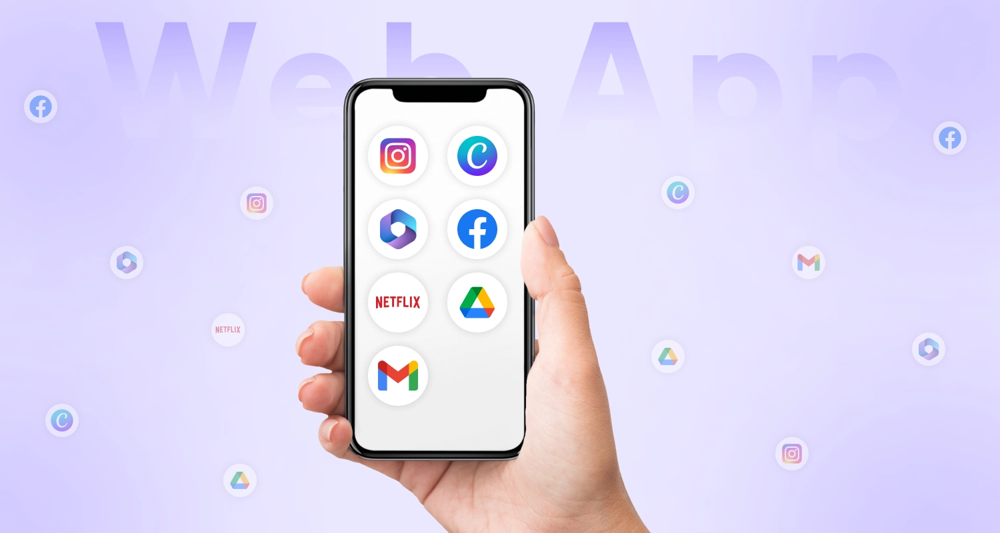

Area Umanistica
In questa sezione ho raccolto gli argomenti che ho trovato più interessanti tra quelli affrontati nelle materie umanistiche. Non vuole essere un elenco completo del programma, ma una selezione personale dei temi e degli autori che mi hanno colpito di più e che mi è piaciuto approfondire.
Italiano
Luigi Pirandello
Di Pirandello mi ha colpito la sua teoria delle maschere. Riflettendoci, mi sono reso conto di quanto sia vera: ognuno di noi mostra agli altri solo una parte di sé, mai la persona intera. Un esempio che mi viene in mente sono i miei professori: io ne conosco solo il lato lavorativo, ma per il resto, chi sono davvero fuori dalla scuola, non lo so. È proprio questo che Pirandello racconta, e per questo la sua teoria mi ha fatto pensare parecchio. Perciò penso che non si possa mai conoscere una persona nella sua interezza, e che avrò sempre la possibilità di scoprire un suo lato nascosto.
Giovanni Verga
Di Verga mi piacciono soprattutto le storie che racconta, e in particolare il Ciclo dei Vinti, dove dà voce a chi lotta e viene sopraffatto dalla vita. Mi affascina il periodo a cui appartiene, tra Naturalismo, Positivismo e Verismo, e il suo modo diretto e realistico di rappresentare le persone e le loro difficoltà, senza addolcire nulla.

Lingua Inglese
Web Apps
What I like about web apps is how convenient they are for the user. You can access them from any device with a browser, without having to install anything, and they're available anytime and anywhere. In many cases I find them even more efficient than the physical, real-world services they replace, since they let you do in a few clicks what would otherwise take time and effort. This is what draws me to them, and it's a big part of why I'm so interested in web development.
